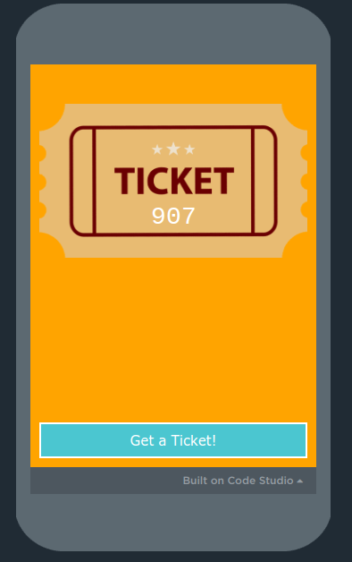

How do we measure and compare the speed of different algorithms?
Have you ever lost a pencil in a backpack? What are the steps you take to find the pencil?
Think about the sequence of decisions and comparisons you make. This is an algorithm at work.
You will use these to record your observations, hypotheses, and data during today's activities.
First up:
Problem
Setup
A list of tickets plus the winning number. Each volunteer scans a QR code to get their ticket number.
Let's check if anyone has the winning number!

How many steps did it take to find out if anyone had the winning ticket? How many times did I have to ask someone their number?
What if we had six volunteers? The whole class? The whole school? What is the pattern here?
What is the greatest possible number of steps this could ever take?
That question doesn't really have a simple answer, does it?
Write your answer on your whiteboard: what is the relationship between the number of tickets and the maximum number of steps?
| Scenario | Inputs | Steps |
|---|---|---|
| 1 | 3 | 3 |
| 2 | 6 | 6 |
| 3 | 10 | 10 |
| 4 | 100 | 100 |
With linear search, the number of steps grows at exactly the same rate as the number of inputs. You check every item one by one until you find the target or exhaust the list.
If there are n items, linear search may need up to n steps. This is called linear growth.
Maximum steps — Linear Search
Click Generate Ticket seven times to build your list. After the seventh ticket, the list sorts itself and you will be given a number to find.
Partner up with another group. Share your algorithms and practice running both fully. Determine which one is "faster" or takes fewer comparison steps in the worst case.
Describe your algorithm for searching a sorted list. How does your algorithm decide which number to compare next?
Now try this algorithm and see how it compares to your own.
Each comparison eliminates half of the remaining options. This is why it is called binary search: it divides by two at every step.
Important: Binary search only works on a sorted list. If the numbers are not in order, you cannot rely on the comparison to eliminate a half.
Everyone scan the QR code to get your number. Line up across the front of the room in numerical order.
Scan to get your number
Binary Search — Finding 705 in a sorted list of 7
Found 705 in just 3 steps! Linear search could have taken up to 7 steps.
Copy this chart on your whiteboard. For each list size, fill in the shrinking path: how many numbers could still be left after each binary search step?
Example: with 7 inputs, the worst case can shrink from 7 → 3 → 1. Count each number in the path to get the maximum steps.
| Inputs | Worst-Case Shrinking List | Max Steps |
|---|---|---|
| 1 | 1 | 1 |
| 3 | 3→1 | 2 |
| 5 | 5→2→1 | 3 |
| 7 | 7→3→1 | 3 |
| 9 | 9→4→2→1 | 4 |
| 15 | 15→7→3→1 | 4 |
Assume the target is in the side that keeps the most numbers after each split.
Binary search does not add one step for every new input. A step can remove about half of the remaining list.
Track the maximum steps for different list sizes.
| Scenario | Inputs | Steps |
|---|---|---|
| 1 | 1 | 1 |
| 2 | 3 | 2 |
| 3 | 5 | 3 |
| 4 | 7 | 3 |
| 5 | 9 | 4 |
| 6 | 15 | 4 |
How many bits does it take to represent each input size in binary?
Think flippy-dos: each flap is a place value. Add the places showing 1.
Maximum steps — Binary Search
As inputs grow, steps grow at the same rate. A list of 1,000 items could need 1,000 comparisons.
Steps grow much more slowly. A sorted list of 1,000 items needs at most 10 steps. A list of 1,000,000 needs only 20 steps.
Trade-off: Binary search is much faster, but the list must be sorted first. Sorting has its own cost.
If I chose a number, which algorithm would I use to see if it was in a list one number long with the fewest steps? What if I wanted to look in a list of five numbers? What about one hundred numbers? Explain your thinking.
Consider the trade-offs between linear and binary search, and think about when each one is the better choice.
What is the third step using Binary Search to look for the number 32 in this list of 15 numbers?
1, 2, 3, 4, 10, 11, 16, 25, 32, 33, 45, 47, 51, 69, 75